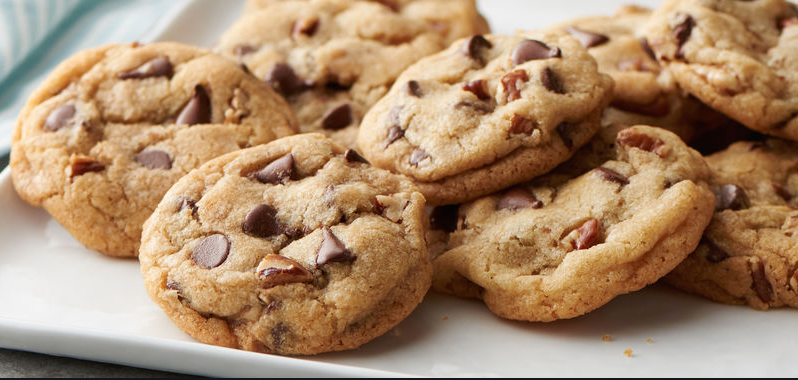

Chocolate Chip Cookies

Ingredients
- 1 cup salted butter softened
- 1 cup white sugar
- 1 cup light brown sugar packed
- 2 tsp pure vanilla extract
- 2 large eggs
- 3 cups all-purpose flour
- 1 tsp baking soda
- 1/2 tsp baking powder
- 1 tsp sea salt
- 2 cups chocolate chips
Directions
- Preheat oven to 350 degrees F (175 degrees C). Line a baking pan with parchment paper and set aside
- In a separate bowl mix flour, baking soda, salt, baking powder. Set aside.
- Cream together butter and sugars until combined. Beat in eggs and vanilla until fluffy. Mix in the dry ingredients until combined. Add 12 oz oz. package of chocolate chips and mix well.
- Roll 2-3 TBS of dough at a time into balls and place them evenly spaced on your prepared cookie sheets. Bake in preheated oven for approximately 8-10 minutes. Take them out when they are just BARELY starting to turn brown. Let them sit on the baking pan for 2 minutes before removing to cooling rack.
Recipe Info
Contact Me
Email me!
32 Campus Drive
Missoula, MT 59812